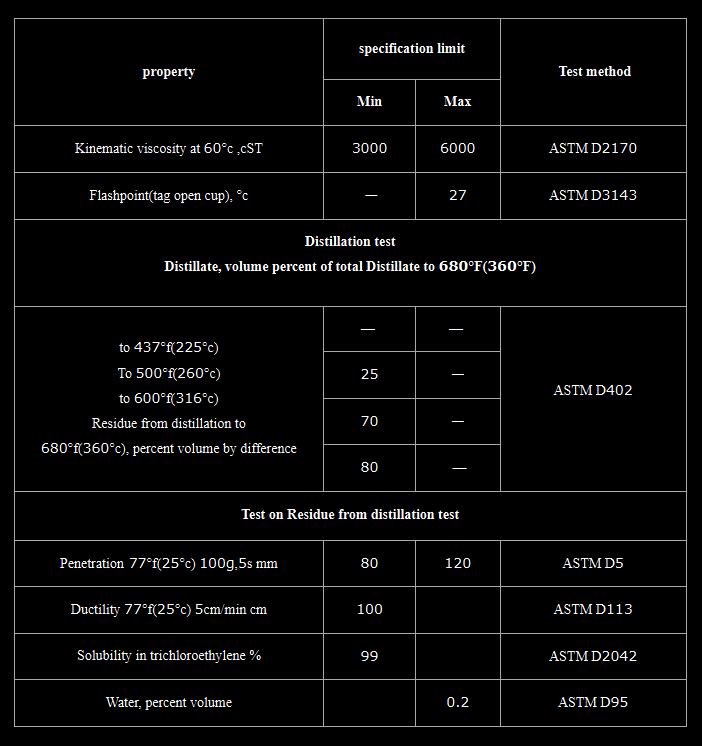

Cutback Bitumen RC‑3000 – General Description │ Iran Bitumen Supply │ IBITMCO
Cutback Bitumen RC‑3000 is a rapid‑curing cutback asphalt formulated by blending high‑quality penetration‑grade bitumen with highly volatile petroleum solvents such as gasoline or naphtha. These solvents significantly reduce the viscosity of the bitumen, allowing it to be applied at ambient temperatures without heating. Once applied, the solvent evaporates quickly, enabling the bitumen to regain its original hardness and perform as a strong, durable binder within the pavement structure. Rapid‑curing cutbacks like RC‑3000 are designed for applications requiring fast setting, deep penetration, and strong adhesion. Specifications allow up to 45% distillate content, giving RC‑3000 its characteristic rapid evaporation rate. This makes it ideal for environments where construction speed is essential or where climatic conditions demand quick curing. At Iran Bitumen Supply │ IBITMCO, our RC‑3000 is manufactured from premium vacuum residue feedstock and blended with carefully selected volatile solvents to ensure consistent curing behavior. It fully complies with ASTM D2028 standards for rapid‑curing cutback petroleum asphalts. The thermoplastic nature of the base bitumen ensures predictable performance across varying temperatures, softening when heated and hardening as it cools.
Understanding How RC‑3000 Works
Cutback asphalt is produced by adding volatile solvents to bitumen to make it liquid at ambient temperatures. In RC‑3000, gasoline or naphtha is used as the primary cutter, resulting in a binder that cures rapidly once applied. This temporary reduction in viscosity allows the bitumen to coat aggregates efficiently, penetrate granular surfaces, and form a strong adhesive layer. As the solvent evaporates, the bitumen returns to its original viscosity and hardness. Proper evaporation is essential to avoid long‑term softening of the pavement. When formulated correctly, RC‑3000 provides excellent adhesion, durability, and long‑term performance in demanding construction environments.
Applications of Cutback Bitumen RC‑3000
Cutback Bitumen RC‑3000 is widely used in road construction and maintenance, particularly in applications requiring rapid curing and strong bonding. It is commonly used in prime coats, where it penetrates deeply into non‑asphalt base courses, stabilizes loose particles, and creates a waterproof foundation for the final asphalt layer. RC‑3000 is also used in patching materials, stockpile mixes, and cold‑applied asphalt treatments. Its rapid curing properties make it ideal for temporary road surfaces, deviations, and high‑traffic areas where construction time must be minimized. In waterproofing applications, RC‑3000 seals surfaces, plugs capillary voids, and bonds mineral particles effectively. Because it does not require heating, RC‑3000 is especially valuable in remote locations, small‑scale projects, and situations where heating equipment is not available.
Packing Options for Cutback Bitumen RC‑3000
At Iran Bitumen Supply │ IBITMCO, RC‑3000 is supplied in packaging formats designed for safe handling and efficient transport. It is available in new thick steel drums placed on pallets to prevent leakage during containerized shipping, as well as in IBC tanks, bitutainers, and bulk tanker trucks for large‑scale infrastructure projects. These packaging options ensure that the product arrives in optimal condition and is ready for immediate use.
Safety Guidelines for Handling RC‑3000
RC‑3000 contains highly volatile solvents and must be handled with care. It should be transported, stored, and applied at the lowest practical temperature. All ignition sources must be eliminated during use due to the flammable nature of the solvents. Direct inhalation of vapors and skin contact should be avoided, and appropriate personal protective equipment must be worn at all times. The product and any washings must never be allowed to enter stormwater or sewer systems.

Specification of cutback bitumen RC-3000